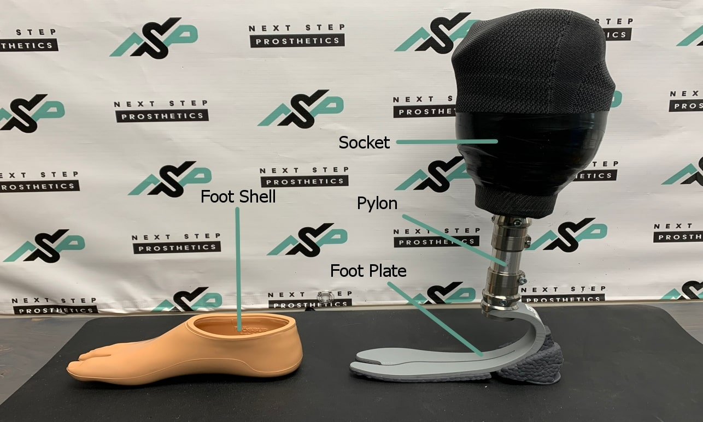
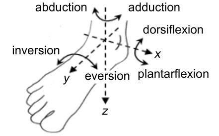
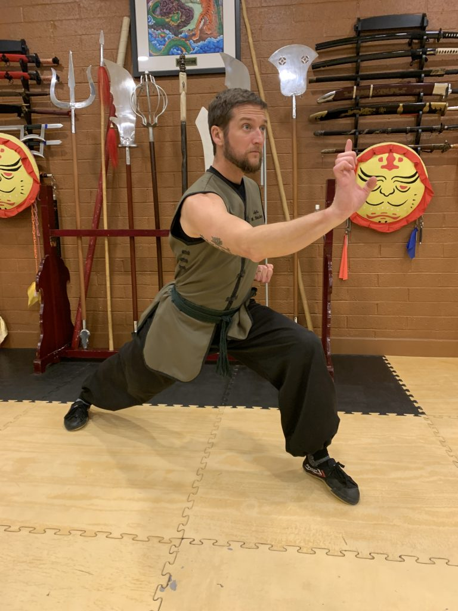
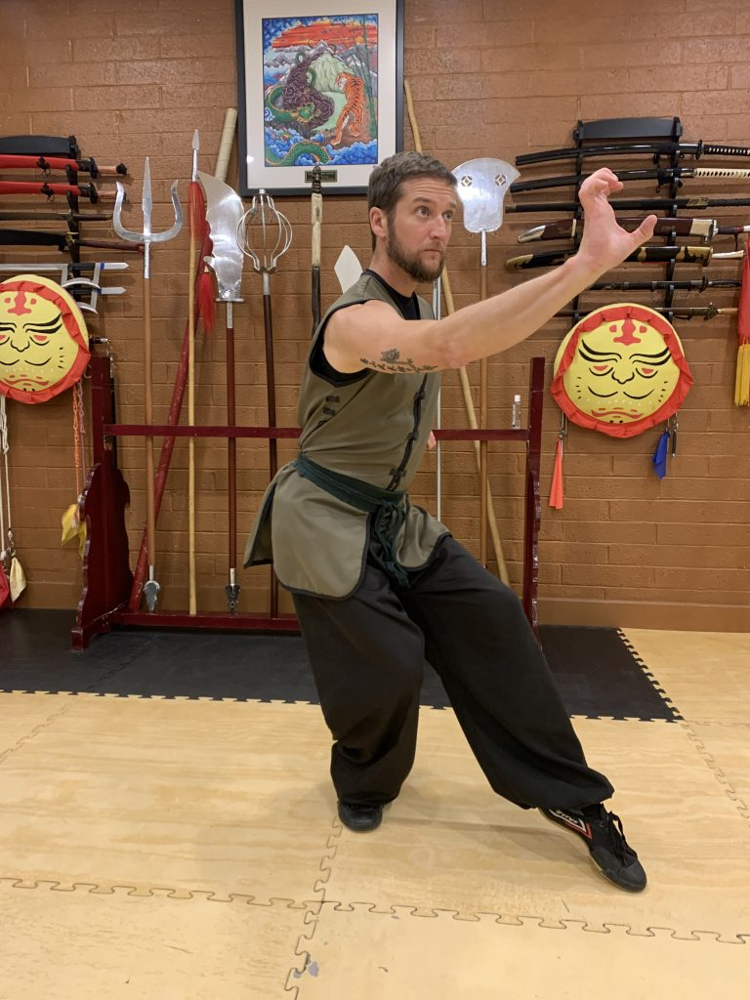
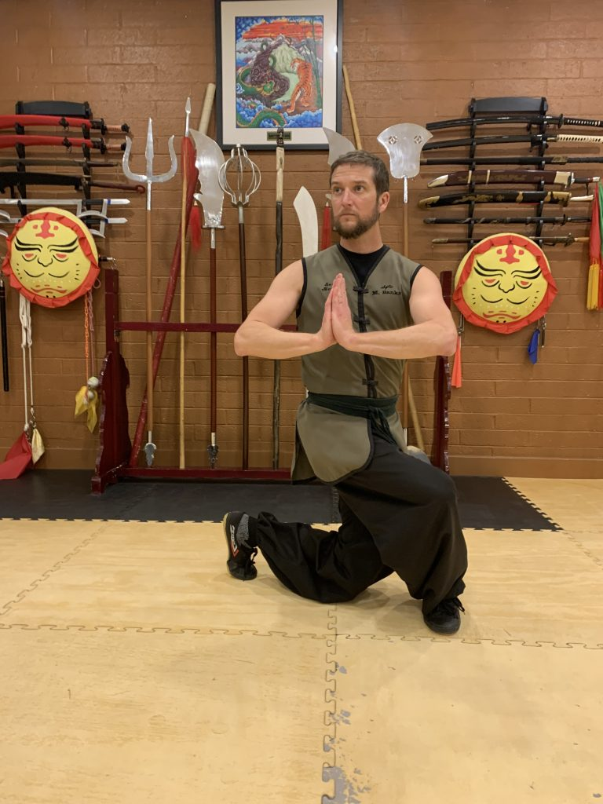
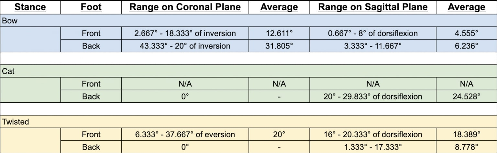

Biomechanics and Kung Fu: Bringing Traditional Martial Arts and Prosthetics Together
Aiden Wittekind
Internal Advisor: Sheri Jordan External Advisor: Mike Kayser Internship Location: Next Step Prosthetics
Abstract
In Chinese, the word for kung fu is 功夫 (gōng fu). While translators often assign the meaning of 功夫 to be “martial arts” or even the Romanized “kung fu,” that is not the most accurate definition of 功夫. 功夫 can be translated better to something akin to “skill acquired through hard work.” The most common way that 功夫 is applied is through martial arts. Martial arts are for everyone, everyone should have access equally. Unfortunately, people with lower limb prostheses are at a significant disadvantage in practicing martial arts due to balance and flexibility challenges with their prosthetics. This creates a barrier to entry that makes training kung fu and gaining the associated physical and mental health benefits a challenge. This study will attempt to develop adaptations to prosthetics that could lower this entry barrier. Specifically, the project will investigate ankle mobility in kung fu practitioners and compare it to prosthetic limbs to see where the prosthetics are lacking. Hopefully, the information gathered can be used not only to increase the accessibility of kung fu but also to improve the quality of life of prosthetic users who may need a more flexible prosthetic limb.
My name is Aiden, I’m a martial artist and biology nerd. I’m a huge fan of learning new things. Be it an ancient kung fu form, a cool fact about an invertebrate, or a new piece of Star Wars lore. I’ve known for a while I wanted to do a Senior Research Project, but couldn’t quite place my finger on what interested me. Then, one day, as I stood in a difficult martial stance, I noticed the incredible range of motion of motion my ankles had. The biological leg allowed me to contort into some pretty complex stances, but would an artificial one do the same?
Legs, it turns out, are rather important. For mobility and balance they are some of the most important parts of human anatomy for daily function. When someone loses a leg, a common solution is the usage of a lower limb prosthetic, a device meant to mimic the function of a biological leg and foot that can aid in walking and running. Walking and running are already very complex motions, despite their commonality. But what about other, more difficult motions? What if someone with a lower limb prosthetic wanted to do kung fu? Do current prosthetic limbs suffice? Or can they be improved to lessen discomfort and increase efficiency and ease of motion?
These questions are what led to my project. In essence, can improvements be made to lower limb prosthetics to make Shaolin kung fu more accessible? If so, what improvements are they? Through my research for this project, I narrowed the scope of this project down a bit. First, for the sake of time, I am focusing only on transtibial (below-the-knee) prosthetics. Further, I noticed that the most likely portion of the prosthesis that could be improved was the ankle joint, as that is the section I believe requires the most mobility for kung fu.
That’s all for today. I can’t wait to dive deeper into this project. I’ll be back next week with a more detailed explanation of the parts of a lower limb prosthetic and an update on the start of the project. Until next time!
– Aiden
P.S. Attached is a picture of me with a Northern Shaolin Boradsword. I also attached my Project Proposal below if you want more information!
This week of the project will focus on the selection of participants as well as updating readers on the anatomy of a prosthetic leg. For the selection of participants phase of the project, 3-5 Black Belt students at my martial arts school will be asked if they wish to participate. If they show interest they will be given informed consent forms detailing how and what data will be collected (Things like measurements of ankle mobility), what will remain confidential (things like name and age), and showing the assumption of risk. By the end of the week, I hope to have the majority of my participants selected and ready for data collection.
Now for the fun part! When talking about “prosthetics” people generally mean a device that allows someone who has lost a limb to regain some level of usage from the limb. In reality, a prosthetic is any artificial body part that replaces a biological part. Devices that stop aneurysms by blocking blood flow out of an artery are prosthetics. As I mentioned before, the prosthetics I will be focusing on are transtibial prosthetic legs. These prosthetics are attached to the residual limb (whatever part of the limb remains post-amputation) when an amputation has been made below the knee and are used for everyday activities like walking and running.
A transtibial prosthetic has four major parts:
Socket. The mechanism for attachment to the residual limb. Sockets often are paired with a liner worn on the residual limb to create suction that holds the prosthetic in place.
Pylon. The ‘shin’ of the prosthetic. The pylon provides support and connects the socket to the foot.
Footplate. The piece of the prosthetic which mimics the biological foot. Footplates can be as simple as a plate of rigid material or as complex as two carbon fiber plates working together to simulate ankle mobility
Foot Shell. Provides some balancing support but mostly fills space in shoes so that they can be worn comfortably. Foot shells are often designed to visually resemble a biological foot.

Prosthetic Diagram showing the socket, pylon, footplate, and foot shell. Photo by me
That is all that I have for today! Thanks again for checking in on my project. Next week will likely include an update on participants and more detailed information on martial stance work. See you in a week!
-Aiden
Week 2: The Journey Post-Amputation
March 6, 2024 9:58 am
Hello again!
This week for the project has been rather slow, but consent forms for the actual data collection have begun to circulate! I already have 4 participants and will begin scheduling times to get them into the office for data collection.
I know I mentioned going over stances this week, but I think it’s more important to talk about how prosthetics are constructed before we start to do kung fu with them. So, this week I wanted to focus more on how prosthetic legs are created and personalized to each patient. Since my focus has been on transtibial amputations (below the knee), I’ll be focusing on that in my breakdown. Let’s start from the top.
Directly Post Surgery: After surgery, the residual limb is placed in a soft, wrap-like device that serves to protect it while it’s in the early stages, keep the bones aligned where they need to be, and remind the patient that they are missing a limb. Adjusting to a lack of limb takes time and the device serves as a tactile reminder for the patient’s safety.
A Few Months Later: When the residual limb has healed enough to begin the process of getting a prosthetic it’s time for a scan of the residual limb. The scan creates a three-dimensional model that can be used to create a preliminary socket for the patient. The prosthetist will also take measurements of the biological leg so that they can match the prosthetic leg to it.
Building the Prosthetic: Back at Next Step, the scan of the residual limb is used to create a 3D model of the socket. That model is then printed in-house and fitted with an appropriate pylon and foot to create a preliminary prosthetic. This leg will allow the patients to begin physical therapy and practice walking again, while also giving the prosthetist a place to start while they begin to customize a final prosthetic.
The Final Prosthetic: When the changing size of the residual limb is mostly stable and the patient is ready they will have another scan of their residual limb and another socket model will be created. This one, however, will be sent to an external facility where they will craft a socket out of resins for the patient. This ‘final’ socket can still be changed, but is intended for longer use and is more comfortable and more stable than the 3D-printed ones.
The first leg will have a 3D-printed socket for a few reasons.
The patient’s residual limb is subject to swelling and will change size pretty consistently for a while post-surgery. A quick and easy socket to make means they can walk around much quicker when they need adjustments.
Making a final socket takes much more time, and is more difficult to adjust. From a mental health perspective, the sooner a patient gets up and walking the more likely they are to have a better quality of life and motivation to keep walking.
That’s all that I have for today! Next week will include more information on the beginning of the data collection and possibly a brief history of kung fu to get ready for the data collection portion of the project!
-Aiden
Week 3: A Brief History Of Kung Fu
March 13, 2024 1:32 pm
Hello Everyone!
This last week has been chaotic. On Sunday, my computer broke and is no longer functional, which was frustrating enough. But to make matters worse, I had scheduled data collection for ankle mobility with three of my four participants for Monday. Not having a computer made things significantly more challenging. Thankfully a friend chipped in to help and all of the data on biological ankle mobility I need has been collected and is ready to go through.
Like I said last week, I want to talk a little more about the origins of kung fu, specifically, the branch of kung fu I practice, Southern Shaolin Kung Fu.
The origins of Shaolin Kung Fu date back to the end of the 5th century B.C.E when an Indian Buddhist monk, Ba Tuo (Chinese name) traveled to China to teach Buddism. Eventually, word of Ba Tuo reached the Emporer, who encouraged Ba Tuo to continue to spread his teachings and provided him with a piece of land on the side of Sōngshān (嵩山) Mountain. Ba Tuo built a monastery on this land which became known as “Small Forest” or Shàolín (少林). This became the first iteration of the Shàolín Temple.
Forty years later, another Buddhist holy man named Bodhidharma left India to spread the word of Ch’an (Zen in Japanese) Buddhism. In China, he found the now well-known Shàolín Temple, which was famous for translating Buddhist texts. Bodhidharma sought entrance to the temple but was denied, as many visitors had already caused harm to the temple. To prove his dedication to Buddhism, it is said that Bodhidharma meditated in a nearby cave for nine years. Eventually, he did gain entrance to the temple.
Upon entering Shàolín Temple, Bodhidharma, or Damo (his Chinese name), found that the monks were physically weak and unable to perform the necessary meditations expected from practicing monks. As a solution, Damo created a selection of exercises based on yoga and Indian Martial Arts to strengthen the monks physically. This led to the creation of gōngfu (功夫) meaning skill achieved through dedication and hard work. Originally, gōngfu was for simply keeping oneself in physical shape, but due to frequent attacks on the Shàolín Temple, it developed into a form of self-defense. Allowing the monks to ward off attackers. Later, gōngfu became romanized into western languages as kung fu keeping a majority of its martial aspects in popular culture, but losing some of the more spiritual aspects such as personal health and growth. Partially this is due to wushu or martial arts movies, which became very popular in the United States and thus spread to more of western culture.
As this project develops, I want to increase awareness of the health aspects of kung fu, not just the fighting ones. This project’s aim to increase accessibility to martial arts is not so that more people can fight, but so that more people can gain the mental and physical benefits of martial arts. To embody the original goal of gōngfu, hard work and dedication leading to skill and personal growth.
That is all I have for today, next week I’m going to look into possibly gaining access to a motion lab to gain supplemental data for the project and begin sifting through what I have already collected.
-Aiden
Week 4: Ankles Are Annoyingly Complex
March 20, 2024 11:26 am
Hello!
As I mentioned previously, I’ve gathered measurement data on four of my five participants and today I plan to dive a bit more into how I collected the data. So without further adieu, let’s jump right in!
For this project, I’ve focused specifically on the ankle joint. It is the part of a transtibial that would require the most flexibility when the leg is being used, it seemed like a good place to start the research. Biological ankles are extremely complex, they can flex on multiple planes which makes them very useful for walking on uneven terrain or attempting to hold complex martial stances. However, ankle complexity and flexibility also make it extremely difficult to fully mimic the functions of a biological ankle in a prosthetic. Knowing this, I wanted to know the extremes of the range of motion required for the stances in a biological ankle so I know how flexible the prosthetic needs to be.
Data Collection: For the actual data collection I focused only on two planes of motion that I thought were the most pertinent to the stances being measured. These two planes are sagittal and coronal
The sagittal plane includes the pulling back or pointing of the toes. Pulling the toes back is considered relative dorsiflexion while pointing the toes is considered relative plantarflexion.
The coronal motion includes tilting the foot inward or outward.
Measurements for these planes come with relative directions to the neutral position. Dorsiflexion and plantarflexion for the anterior/posterior plane and inversion and eversion for the medial/lateral plane.
Because a picture is a little easier to comprehend, refer to the image below for a little more clarity on the planes of motion for an ankle. (The sagittal plane is labeled as x and the coronal plane is labeled as y)

Image Courtesy of Muhammad Nazrin Shah
The measurements come in angles from the neutral position (the position in the image above). To measure the angles I used a fancy protractor-like device called a goniometer. The participants held the stance for as long as it took for me to run around and collect data on both planes on the front and back ankles. Each trial was repeated three times to hopefully reduce outliers.
That’s all that I have for this week. Thank you for reading.
– Aiden
Week 5: The Stances Revealed
March 27, 2024 10:02 am
Greetings once more everyone, and welcome back!
This week is the week of data collection and organization! After fighting with Google Sheets on an unfamiliar computer for the better part of the day, I am proud to say I now have a set of theoretical “maximum” ranges for ankle mobility in stances. The data was gathered from black belt students who exemplify the ideal for each stance. Because of this, the data shows the extremes of the range of motion needed for holding these stances. This provides me with a goal to work towards while I’m increasing flexibility in a prosthetic ankle. I am almost ready to start sharing the data I’ve gathered. Right now I’m going through the final stages of organizing and calculating.
But today, I think it’s about time I covered a bit more about the stances themselves. Up until this point, I’ve been rather nebulous in my descriptions of the stances I’m measuring, I have only mentioned them in passing as a reply to a comment. But now it’s time to reveal them properly. There are five major stances in Southern Shaolin Kung Fu, they are:
Balance Stance: Consists of standing on one leg with the non-posting knee raised to be at belt height with the toes pointed downward.
Horse Stance: Consists of a wide stance with feet about shoulder width and half apart from each other. Toes point forwards and the stance holder sinks as low as they can into the stance, with the eventual goal of getting their thighs parallel with the ground and their knees over their ankles.
Bow Stance: Consists of a narrower ‘front’ stance in which the front knee is over the front ankle and the back heel is planted into the ground for support (Fig. 1)
Cat Stance: Similar to balance stance but the ball of the raised foot is lightly placed on the ground and the stance holder sinks on their back leg. (Fig. 2)
Twisted Stance: Easily the most complex to describe, where the back foot is raised to the ball of the foot, the back knee is about a fist from the ground, and the front foot twists outward so the toes point perpendicular to the back foot’s toes. (Fig. 3)
Of these five stances, I only tested three of them. Bow stance, cat stance, and twisted stance. This is because those three in combination have ankle movement that together covers the range needed for balance and horse stances or unique ankle motion. (I’m talking about twisted stance, that one is WEIRD by the standard of the other stances).

Fig. 1, Bow Stance

Fig. 2, Cat Stance

Fig 3. Twisted Stance
Special thanks to Sifu Banks for holding the above stances so I could get a picture.
That is all I have for today, next week I should be ready to start talking about the data I’ve collected. Thank you so much for reading and I shall see you next time!
-Aiden
Week 6: The Numbers
April 2, 2024 12:39 pm
Hello Everyone. This week I wanted to dive a bit more into the numbers side of things, focusing on the ankle mobility data I gathered.
First, a quick reminder of how I collected the data. I asked three black belt participants to hold three martial stances (bow stance, cat stance, and twisted stance. Detailed here) while I collected data on the degree to which their ankles flexed from the neutral position.
Data was collected on two planes of motion, the sagittal plane and the coronal plane, along with taking notes on whether the ankle had relative dorsiflexion/plantarflexion (for the sagittal plane) and inversion/eversion (for the coronal plane, more details on the planes of motion here)
For each stance, there are two ‘sides’, left foot forward and right foot forward, and for each side, there is a relative front foot and a relative back foot. Each stance was measured three times on each side to more accurately simulate a range of stances.
Some stances involved a neutral ankle or had a plane of motion not vital to the stance. These were the front foot for the entirety of cat stance*, the coronal plane for the back foot of cat stance, and the coronal plane for the back foot of twisted stance.
And with all of that, here are the results:

* Cat stance where the front foot is in a neutral position instead of pointed is called “seven star” stance. This stance is functionally the same as cat stance and would be given to students with a prosthetic for when their prosthetic leg is forward.
Thank you for reading this week’s post!
– Aiden
Week 7: The Customization Of A Prosthetic
April 8, 2024 12:30 pm
Hello once again everyone!
This week is a little different as I’m preparing to go on vacation for a week (I didn’t take a spring break before so I’m taking one now) so I want to hold off on more project discussion until I return. For now, I wanted to talk more about the variety of pieces that can be included in a prosthetic leg.
Back in my first post, I talked about the four major parts of a prosthetic. The socket, the pylon, the footplate, and the foot shell. In short, the socket holds the prosthetic on the residual limb, the pylon acts as a shin, and the footplate and foot shell work together to mimic a foot (more detail here). I didn’t mention Joints before because they are often a part of the footplate in simple prosthetics, but in the more complex ones I’m talking about today that begins to change. Because each patient has different circumstances and needs, there are various types of each of these parts.
Socket: Sockets are created to match a patient’s residual limb as accurately as possible. Often, if the socket is too big, the patient can use specially sewn socks to fill the space. There are a few methods for actually holding the sockets in place:
Suction: The socket is placed on the residual limb over a liner, then a sleeve is pulled over the socket and liner to the skin which creates enough passive suction to hold the socket in place. Very common, especially for below-the-knee amputations
Vacuum: Same process for the suction socket but with a one-way valve that creates an active vacuum to hold the socket in place. To remove, the valve is opened which breaks the seal.
Pin Lock: uses a pin on the bottom of the liner (fabric worn on the residual limb for protection and to provide a better surface for the socket to connect to) that clicks into place on the bottom of the socket.
Joints: Joints come in a few major categories. The major purpose of this component is to assist in the simulation of a biological gait cycle through various means. I have seen four common joint types:
Rigid: as the name describes, there is no motion through the joint which is locked in place.
Mechanical: a joint that only bends when the correct amount of pressure is applied to it, useful because it is light but has limitations still. Probably most common for ankle joints.
Microprocessor: A joint that has a small computer that senses which sections of the gait cycle a person is in and changes the amount of resistance in the joint to allow for the correct motion. Microprocessors are much heavier than mechanical joints but the trade-off is usually worth it. Very common for knee joints but less common for ankle joints.
Power: An actual motorized joint. These are very heavy. I have not seen them used for an ankle joint as it is usually not worth the effort. Some patients find the motorized assistance worth the extra weight.
Feet: Prosthetic feet come in various types for various levels of activity. Typically, feet are composed of a curved blade of carbon fiber or fiberglass called a footplate as well as a foot shell.
Solid Footplate: It’s just a singular footplate, pretty simple and useful for very low levels of activity.
Bifurcated Footplate: The foot plate is split into two which allows for more balance on uneven surfaces. Useful for moderately paced activity over uneven surfaces.
Running Blade: A long, curved “blade” of fiberglass or carbon fiber that adds extra spring to a patient’s step. Very useful for running as it better simulates the biological leg’s springing motion.
It is crazy to think that there are more types for each of these components! I only listed the ones I’ve seen in my internship and or are familiar with through research. Thank you all for reading this monster of a post, until next time!
-Aiden
Week 8: A Brief Intermission
April 17, 2024 9:48 am
Hello Everyone and welcome back!
This week is going to be an extra short post because I just got back from my belated spring break vacation. My family and I traveled to Los Cabos, which is an area at the very tip of the Baja California peninsula.
While there I noticed the quantity of “accessible” places for individuals who needed ramps or additional assistance. Which was surprisingly a lot, most places I went had some form of alternative pathway for wheelchairs but very few handrails. I also noticed that the wheelchair ramps were typically narrow and steep, it would be possible to drive a wheelchair up one but it would be a close fit.
In general, I started thinking more about how patient care looks in other countries, and how other policies on health insurance affect the sort of care patients receive. In Mexico, for example, there is a public health program that allows most citizens to meet basic needs. But from what I saw with a quick Google search, prosthetic limbs are not included in that coverage and most patients pay out of pocket. Unfortunately, this concept ends up being just food for thought because it could be a research project on its own and I don’t have time to squeeze it in at the end of this one.
In the coming weeks, I plan to work with my external advisors to start developing my final presentation and product for my project. With Next Step I will be looking into the possible prosthetic builds that could work for martial arts students, hopefully resulting in a final product of a theoretical prosthetic that a patient could use. Unfortunately one of my external advisors will be out of town for the rest of this week so I won’t be able to have a conversation with him about what limb systems to use until he returns next Monday.
Thank you very much for checking in even though it’s a short post this week and I’ll check back in next week with a few updates on the project. Until next time!
-Aiden
Week 9: Minor Errors And Prosthetic Knees
April 24, 2024 10:45 am
Hello once again everyone and welcome back!
First, a minor correction, last week in my short post I mentioned that my external advisor was gone that week and would be back this week. I was mistaken, turns out he is gone this week from Tuesday through Friday. This is rather unfortunate as it’s time for the project to start wrapping up. However he was here on Monday, and I was able to spend a very productive day at Next Step both in terms of my internship and my project.
Monday was busy. Because Mike would be gone for the rest of the week we had many patients stop in for a quick modification or fix before he’d be unreachable for a week. This meant we had patients in pretty much back-to-back which is unusual. I spent some extra time helping because of this. For the most part, it was small odds and ends, things like having scissors and other tools ready when Mike needed them and grabbing sleeves or liners from the storage cabinets while Mike was working on another project so he could work a little more efficiently. I changed out a socket for a patient and learned how to place a new socket on a patient’s existing pylon while keeping the former alignment. Aligning the leg is tedious as it requires the patient to walk for a bit, then allow the prosthetist to make small adjustments until the prosthetic fits as comfortably as it can, so not having to redo all that work is pretty useful.
About halfway through the day a group of sales representatives showed up and gave a presentation on a new knee joint that combines a microprocessor system with a polycentric (mechanical) joint. This combination is unique on the market and provides a ton of stability and a huge range of motion. I was expecting to just silently watch as the sales reps showed Mike the new part, but to my surprise they included me. They asked what my project was and even gave a few initial thoughts, then invited me to sit and watch the presentation. One of the sales reps even promised to make sure I could see the laptop he was presenting on when he started (which he did). Seeing the sales reps come in and present was fascinating, as it showed me a part of the prosthetics industry I hadn’t interacted with much, the actual industry.
Since I started, I’ve primarily focused on the patient side of the practice, the creation, fitting, and adjusting of a prosthetic. How accessible the practice is, how companies make sure they make a profit, and how the practice itself stays in business all affect the way a patient can receive care. Microprocessor knees are in the range of $20,000. In the United States, insurance will often help with that but patients still have to pay for the right to walk. And to run? Running blades can be even more expensive and are often not covered by insurance. This all led to me thinking a little more about accessibility in my project, even if I find a good prosthetic ankle that has the ranges of motion I need, will it be accessible to patients?
This post got away from me a little bit and ended up extra long. To wrap up, this week, while Mike is gone, I am going to work on organizing and formatting my final presentation. By next week I should have some prospective ankles that could work for my purposes and I’ll be able to test them out.
Thats all for right now, thank you again for reading
-Aiden
Week 10: Not Quite The End
April 30, 2024 11:22 am
Hello Everyone!
This week is a bit odd as there isn’t that much for me to talk about. This week is full of preparation for my final presentation. I could not find a single prosthetic-themed PowerPoint template so I ended up deciding to make my own. It is a bit more work but in the end, I think It will be worth it because the quality of the slides is something I can control better and I can make the slides match my project’s theme.
At my internship, Mike ordered a selection of prosthetic feet that all might work within the parameters of the data I gathered, but there are no guarantees. The current plan is to fashion a handle to allow us to put body weight pressure behind the ankle to try and simulate the pressure the stances would place on the ankle. This would allow us to measure the angles the prosthetic can achieve and compare that to the biological leg data, thus indicating if the ankle would be functional for our purposes.
The main issue I’m worried about is the ankles not being able to dorsiflex nearly enough. The amount of dorsiflexion shown in the biological ankle data was not only extreme but vital to ensure knee safety. Ankles made for walking simply don’t have that level of flexion because it would be extremely difficult to walk on. Mike and I were even talking about how we would build our own ankle, and how the ideal ankle would be one with a changeable amount of resistance so that the patient could adjust the ankle to flex more or less as they achieved better quality stances. If such an ankle is found or if we end up coming up with modifications that would make such an ankle possible, the prosthesis would not be good for walking long distances but could be extremely useful for static stretching and quick change of motion. Such an ankle could benefit not only martial artists but also patients who wish to practice yoga and other high-flexibility activities.
That is all that I have for today, There will be a final post in the coming week with a summary of all fo the findings. Until next time!
-Aiden
The Grand Finale: Ready For The Next Steps
May 12, 2024 4:19 pm
Hello everyone, I’m very sorry for the delay in this last post considering I finished my final presentation last Wednesday. I woke up sick on Thursday and took the day to rest and the final post slipped my mind. Regardless here it is now!
The presentation went very well, thank you to everyone who came to watch! I was the last presenter on the last day and it felt pretty weird to be the one to wrap the whole 2024 senior project selection. I didn’t make it to all of the other presentations but the ones I did make it to were fantastic!
For my presentation, I quickly summarized the stances and anatomy of a prosthetic then shared some of the options I tested that ended up being decent fits for a kung fu ankle! Unfortunately, of the ankles we ordered to test, only one arrived, and it ended up not being a great fit for martial arts anyway. I’ll attach the presentation below for anyone who is interested in viewing it after the fact.
At the end of the presentation, I had a selection of prosthetic parts for people to come up and take a look at. I had a selection of feet including all the ones shown in my presentation below. I also had a microprocessor knee attached to a simple foot and a very long pylon that allowed people to “walk” with it. Because of the way it was built, I was able to demonstrate how a microprocessor changes resistance in different sections of the gait cycle. That particular part of the presentation was something I thought of and put together myself so I’m really proud it turned out as a functional part of the presentation.
The “Possible Next Steps” slide of my presentation covers this pretty well, but If I have time as an independent researcher I’d like to look into what other prosthetic ankles are on the market and maybe even build my own ankle someday. I’m not sure if the prosthetics field is where I want to go for higher education but I really enjoyed my chance to experiment with it.
Thank you again to everyone who followed along on this small adventure I had. Another huge thank you to Mike at Next Step for letting me loiter in his business for ten weeks. I hope I someday have an opportunity to work with them again.
I don’t have much to say, so, for the final time, goodbye to everyone. And thank you so much for reading.
-Aiden
P.S. Yes, the title is a prosthetics pun
P.P.S. I have been waiting since day one to make a pun about the next steps